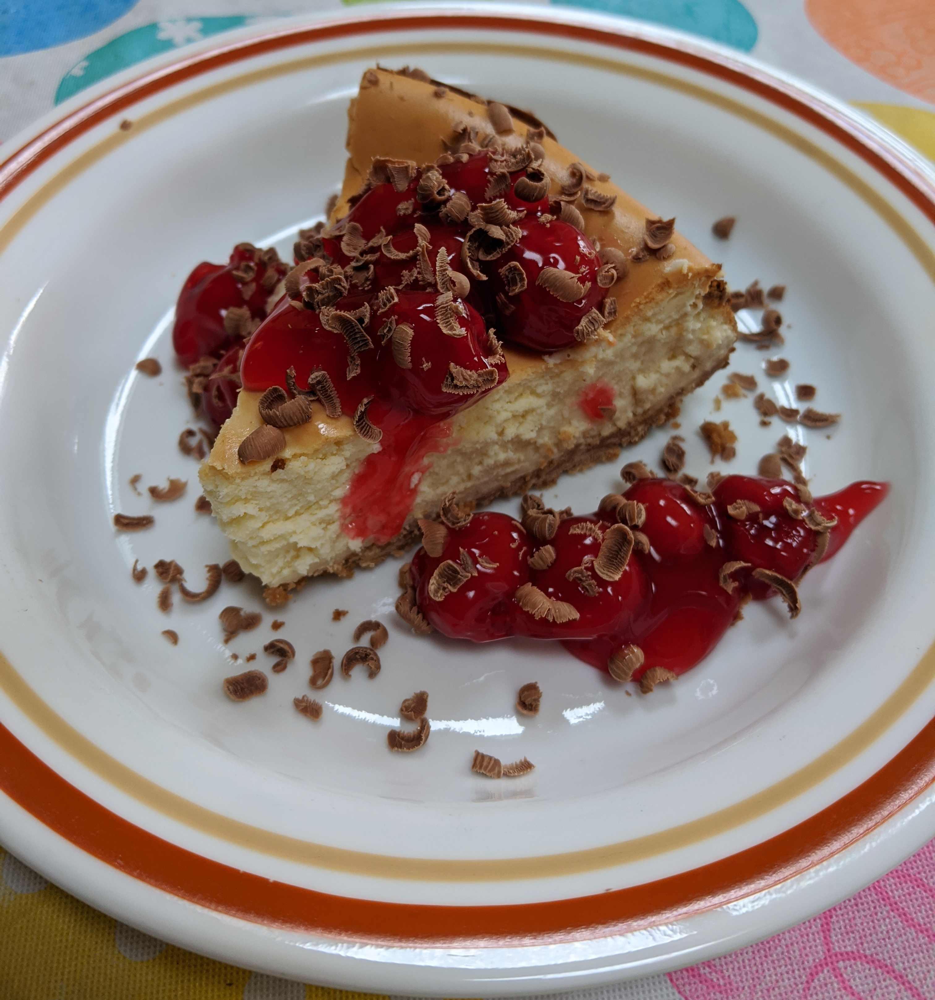

Cheesecake
Cheesecake

Ingredients
Cheesecake Crust
- 9-inch springform pan
- Large deep pan that springform pan can fit inside. Must be at least as tall as springform pan as well
- 1 3/4 cups Crumbled graham crackers
- 1/2 stick melted butter
- 1/4 cup sugar
Cheesecake Filling
- Mixer (preferred but you can do it manually if you don't care about sore hands/arms later)
- 4 packages of cream cheese (8 oz each)
- 1 cup sugar
- 1 tsp vanilla extract
- 4 eggs
Recommended Toppings
- Cherry pie filling
- Chocolate (shaved with cheese grater)
- Whipped cream
Procedure
Cheesecake Crust
- Preheat oven to 350°F
- Combine crumbled graham crackers, melted butter, and sugar
- Press into the bottom and sides of the springform pan
- Bake crust 8-10 minutes until golden. Set aside to cool.
- Wrap springform pan (except top) in foil
- Make filling
Cheesecake Filling
- Cream together the cheese and sugar
- Add vanilla and eggs (one at a time), continuing to cream ingredients together.
- Pour over crust
- Place into pan and fill that pan with water 3/4 way to the height of the springform pan
- Bake at 350°F for 60-70 minutes. Check it around 60 minutes.
- If the outer rim is set and the center is slightly jiggly, your cheesecake is done.
- Cool at room temperature for an hour
- Cover top with foil and chill in fridge for 6-12 hours.
- Carefully remove and serve. Add any toppings you like.